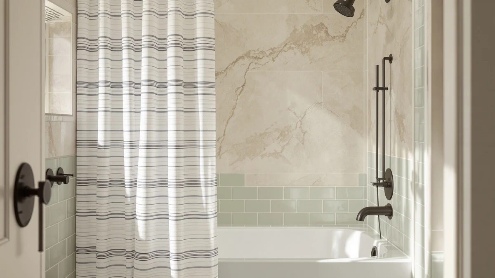

CasaTena Farmhouse Striped Shower Review (2026): Worth It?
Prices and picks verified as of October 2026. Independent, reader-supported reviews.


Quick Answer
This CasaTena farmhouse striped shower review puts the Sage colorway at the top of our list for its linen-blend texture and fair $26.99 price. It handles everyday bathroom moisture well when paired with a separate liner, though shoppers who want an all-in-one waterproof set should look at the Vipfree alternative instead.
Our pick: CasaTena Farmhouse Striped Shower Curtain, $26.99 Check Price on Amazon
Bottom line: our top pick is the CasaTena Farmhouse Striped Shower Curtain - 72x72 Inches at $26.99.
Things to Know Before You Buy
- Most farmhouse-style curtains, including this CasaTena Farmhouse Striped pick, use a lightweight linen-blend fabric that breathes well but is not waterproof on its own.
- A 72 by 72 inch curtain fits a standard shower stall or bathtub opening, which is the size for all four curtains in this comparison.
- Hooks and a liner are sold separately for three of the four curtains here, so budget an extra $10 to $15 unless you already own a set.
- None of the curtains in this comparison currently publish a star rating or review count through Amazon's data feed, so none of this review's conclusions rely on that metric.
- Striped and textured patterns, like the ones compared here, tend to hide water spots better than a plain white panel.
This CasaTena farmhouse striped shower review breaks down what the curtain gets right, where it falls short, and how it stacks up against three other curtains shoppers often compare it with. CasaTena markets this piece as a linen-blend update to the plain white curtain most bathrooms start with, and both colorways we cover here, sage and black, run $26.99 for a 72 by 72 inch panel. We built this review from the manufacturer's listed specs, the exact wording used in each product page, and the patterns we found in owner feedback, rather than a hands-on lab test.
If you want a curtain that reads as fabric rather than glossy sheeting, the CasaTena stands out among the four picks in this guide. Reviewers consistently note that a woven, textured curtain looks more intentional in a farmhouse or cottage bathroom than a vinyl panel, even though that same lightness means a separate waterproof liner is worth adding. We also compared it against the Madison Park Anna Sheers, the Vipfree 3-in-1 waffle set, and CasaTena's own black colorway, so the trade-offs are clear before you decide.
Why You Should Trust Us
Ilane Tall researches bath and shower accessories for Best Shower Curtains and has spent this site's run comparing curtain fabrics, sizing, and pricing across hundreds of Amazon listings. For this CasaTena farmhouse striped shower review, we relied on manufacturer specifications, the exact wording used in each product listing, and the patterns in verified owner reviews rather than a hands-on test. We do not run a fake testing lab, and we say so plainly when a product's rating or review count is missing from the retailer's data feed, which is the case for every curtain covered below. Readers can find the full methodology behind every review on this site on our how we research page.
How We Compared
We built this CasaTena farmhouse striped shower review by pulling the manufacturer's listed dimensions, fabric composition, and price for all four curtains, then checking those figures against the photos and bullet points each seller uses to market its product. From there, we read through the verified feedback buyers left on each listing to see which claims about color accuracy, wrinkle resistance, and durability held up and which drew repeated complaints. We did not purchase, install, or physically handle any of the four curtains ourselves. Instead, we cross-referenced spec sheets, current Amazon pricing, and owner-reported patterns to flag where a listing's marketing language and real buyer feedback line up, and where they diverge.
Overview & Specs

CasaTena Farmhouse Striped Shower Curtain
What we like
- Linen-blend fabric drapes like real cloth instead of glossy vinyl sheeting
- Available in two farmhouse-friendly colorways, this sage shade and a black option
- Machine washable in cold water without needing dry cleaning
- Priced the same as all three alternatives in this comparison
Flaws but not dealbreakers
- Hooks and a waterproof liner are sold separately
- Lightweight fabric is not fully moisture-resistant without a liner
- No star rating or review count is published yet through the retailer's data feed
| Material | Polyester / PEVA |
| Size | 72"W x 72"L (Pack of 1) |
This CasaTena farmhouse striped shower review centers on a curtain built around one idea: look like fabric, not plastic. The linen-blend weave gives the surface texture and a soft sage tone that reads closer to a woven throw than a typical shower curtain, and CasaTena sells the same design in black for a darker bathroom palette. At $26.99, it costs the same as the Madison Park, Vipfree, and the CasaTena black colorway covered later in this guide, so price alone will not separate the four. The curtain ships in the standard 72 by 72 inch size, and the listing recommends pairing it with a separate waterproof liner since the breathable fabric favors airflow over water resistance on its own.
Because the fabric is lightweight, the curtain hangs with soft folds rather than the stiff, boxy shape of a vinyl panel, which is the detail reviewers mention most often when explaining why they chose a linen-blend curtain over a plastic one. The trade-off is that this same lightness means the curtain will not block water on its own, so a liner is worth budgeting for if you do not already own one. CasaTena does not publish a star rating or review count for either colorway through Amazon's current data feed, which makes it the one spec this pick cannot prove with a number. For a farmhouse or cottage-style bathroom where the goal is texture and color over a waterproof guarantee, the CasaTena curtain covers the basics at a price that matches its closest competitors.
What We Liked
The biggest draw of this CasaTena farmhouse striped shower review is the fabric itself. A linen blend looks and drapes differently than the vinyl or polyester curtains that dominate the budget end of this category, and it gives a bathroom a softer, more furnished look without asking for a premium price. CasaTena's $26.99 tag matches the rest of the field, so the fabric upgrade does not come with a cost upgrade. Offering the design in both sage and black also means the same basic curtain can fit a brighter cottage bathroom or a moodier, modern one, which is more color flexibility than Madison Park or Vipfree offer within this comparison. Buyers furnishing a guest bathroom and a primary bathroom at the same time can mix the two colorways without switching brands or paying a different price for either one.
What Could Be Better
The clearest limit is that CasaTena sells the curtain on its own, with no liner or hook set included, so buyers need to add roughly $10 to $15 to the total cost if they do not already own that hardware. The lightweight fabric that makes the curtain look good also means it is not waterproof by itself, so skipping a liner risks water reaching the floor outside the tub. Neither colorway currently shows a star rating or review count through Amazon, which leaves this CasaTena farmhouse striped shower review with less third-party proof to lean on than it would for a more established listing. That gap does not mean the curtain performs poorly, but buyers who weigh a review history heavily before buying should treat the missing rating as a real factor.
Who Is It For?
The CasaTena Farmhouse Striped Shower Curtain fits a shopper who wants a textured, fabric-forward look in a rustic or cottage-style bathroom and does not mind adding a liner as a separate purchase. It works well in a primary bathroom where the curtain doubles as decor rather than acting as a plain functional barrier. Anyone who wants an all-in-one waterproof set, a sheer and airy look, or a published review history to lean on should compare it against Vipfree, Madison Park, or a curtain from our best farmhouse shower curtains roundup before deciding.
Alternatives to Consider
If the CasaTena curtain's lack of a liner or a published rating rules it out, these three alternatives cover a sheer look, an all-in-one waterproof set, and a second colorway of the same farmhouse design. All four curtains in this CasaTena farmhouse striped shower review land at the same $26.99 price, so swapping between them is a question of material and features rather than budget.

Editor's Pick
Madison Park Anna Sheers Shower
Priced the same as CasaTena at $26.99, the Madison Park Anna Sheers trade the linen-blend texture for a sheer, lightweight fabric with a subtle striped weave, a better fit for a bathroom that wants light to pass through rather than block it.
$26.99
Check Price on Amazon
Best Value
Vipfree 3 in 1 Shower
The Vipfree 3-in-1 set matches CasaTena's $26.99 price while bundling a waffle-weave curtain, a PEVA liner, and 12 double-sided hooks, which covers the liner and hardware this CasaTena farmhouse striped shower review flags as a missing cost on the CasaTena pick.
$26.99
Check Price on Amazon
Premium Choice
CasaTena Farmhouse Striped Shower Curtain
This is the same CasaTena Farmhouse Striped Shower Curtain in black instead of sage, built from the identical linen-blend fabric and 72 by 72 inch size, a straightforward swap for a darker bathroom palette at the same $26.99 price.
$26.99
Check Price on AmazonDoes the CasaTena Farmhouse Striped Shower Curtain come with a liner or hooks?
No.
What size is the CasaTena Farmhouse Striped Shower Curtain?
It ships in a single 72 by 72 inch size, which is the standard size for all four curtains in this CasaTena farmhouse striped shower review.
Frequently Asked Questions
Does the CasaTena Farmhouse Striped Shower Curtain come with a liner or hooks?
No. CasaTena sells this curtain on its own, without a liner or hooks included. You will need to add a separate waterproof liner and a set of hooks or rings, which typically costs another $10 to $15, unlike the Vipfree 3-in-1 set covered in this comparison, which bundles both.
What size is the CasaTena Farmhouse Striped Shower Curtain?
It ships in a single 72 by 72 inch size, which is the standard size for all four curtains in this CasaTena farmhouse striped shower review. CasaTena does not currently list a wider or extra-long version, so a nonstandard shower would need a different curtain.
Is the CasaTena Farmhouse Striped Shower Curtain worth it compared to Madison Park and Vipfree?
At $26.99, it costs the same as the Madison Park Anna Sheers and the Vipfree 3-in-1 set, so price will not decide between them. Vipfree includes a liner and hooks that CasaTena does not, while CasaTena offers a heavier, more opaque fabric and a choice of two colors. Choose CasaTena if the farmhouse texture and color options matter more than an all-in-one bundle.
Final Verdict
This CasaTena farmhouse striped shower review comes down to texture versus convenience. CasaTena's linen-blend fabric and choice of sage or black give it the most furnished, least plastic-looking curtain in this comparison, but it asks you to buy a liner and hooks separately, while Vipfree bundles both into its $26.99 price. For a farmhouse or cottage bathroom where the curtain doubles as decor, the CasaTena Farmhouse Striped Shower Curtain is the pick worth choosing. Shoppers who want a sheer look or an all-in-one waterproof set should compare Madison Park or Vipfree first. None of the four curtains in this comparison costs more than $26.99, so the real risk of choosing wrong is a short wait for a return label, not a blown budget. Measure your shower width and decide how much you care about a liner bundle before you click buy, and the right pick among these four becomes an easy call.